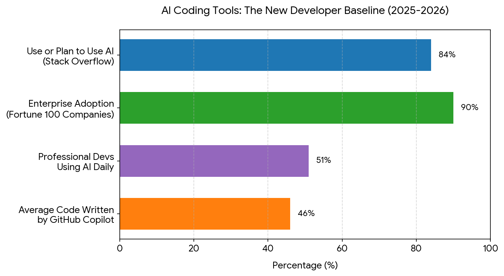
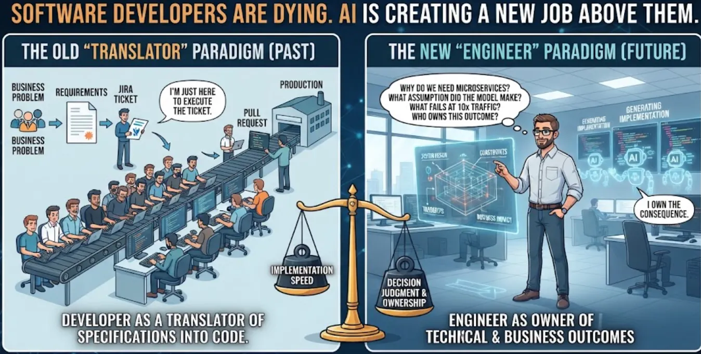
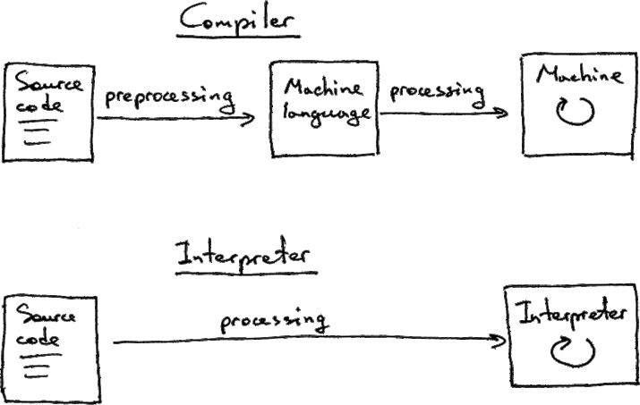

76.0Biomedical Engineering Skills 2
Python Programming in the AI age
Ewan Bremner
CAD
Jacob Young
CAD
Marco Cantini
CV and sci writing
Massimo Vassalli
Python
Aims
To acquire new skills (tools), useful in the everyday life of a biomedical engineer
- 3D drawing (CAD); for designing a mechanical set up, sketching ideas and 3D printing components.
- Programming (Python); to automate procedures, analyse data and images (Y3), interface with devices.
- Writing skills: to organise a report following a recognised structure to convey a scientific message; to prepare a nice CV to explore the job market
Assessment
This course develops over both S1 and S2, assignments are spread across the year, organised as coursework, reports and a group assignment.
- Semester 1
- Python: 20% individual workbooks (5, weeks 1 to 5)
- Python: 20% skills assessment (final exercise)
- Semester 2
- CAD: 20% individual drawing
- CAD: 20% groupwork
- Writing: 20% individual report, linked to CAD
10 credits course
Calendar S1
Note
6 weeks Python module delivered every week, with a 1 hour lecture and a 1 hour tutorial, on Monday 9-10 and 10-11 respectively, in the IT labs (room 712, level 7, James Watt South Building).
- Lectures introduce one idea per week, with live examples.
- Tutorials are structured activities, often in pairs: predicting, breaking, fixing and testing code together. They are not open help sessions: come ready to work.
- Each week has a short assignment, starting in the tutorial and due the following week.
Biomedical engineers answer questions
As biomedical engineers, we are rarely interested in writing code for its own sake. We are asked questions such as:
- What was the average heart rate of this patient overnight?
- Is this drug dose safe for a patient of this weight?
- How many cells are present in this microscopy image?
- For how much of the day was this person physically active?
Note
Computers do not answer questions directly. They execute procedures that we design.
From questions to procedures
Before any code is written, the question must be turned into a procedure a computer can execute. This is computational engineering (or computational thinking).
Until recently, most of the effort went into writing the code.
Today, AI can write most of the code for us.
So where does the engineering go?
A framework: D/D/SD/V
DEFINE
↓
DECOMPOSE
↓
SPECIFY ⇄ DIAGNOSE
↓
VALIDATE
- Define — what question are we answering? What counts as success?
- Decompose — which steps are needed to get there?
- Specify ⇄ Diagnose — for each step: say exactly what it must do, have it built, check it, and find out why it fails when it does
- Validate — does the final answer make sense in the real world?
In this course: the engineering loop
DEFINE
↓
DECOMPOSE
↓
➤ SPECIFY ⇄ DIAGNOSE
↓
VALIDATE
In ENG2012 we focus on the SPECIFY ⇄ DIAGNOSE loop.
- The question and the steps (D/D) will be given to you
- You will own the specification and the diagnosis of each step
- Validation will appear as a simple question: does this number make sense?
In Y3 (ENG3090) you will take ownership of the whole framework.
The loop in one example
Specify: write a function that computes the mean of a list of heart-rate values.
Build (delegated to AI, or to you):
Try again:
--------------------------------------------------------------------------- ZeroDivisionError Traceback (most recent call last) Cell In[2], line 1 ----> 1 print(mean([])) Cell In[1], line 2, in mean(values) 1 def mean(values): ----> 2 return sum(values) / len(values) ZeroDivisionError: division by zero
Diagnose: whose fault is it?
The code crashed on an empty list. Is this a bug?
The specification never said what should happen with an empty list. The AI (or you) had to guess.
When something fails, the first question is always: where does the failure come from?
| Category | Example |
|---|---|
| Specification / interface | nobody decided what to do with an empty list |
| Data / environment | the file is missing, the package is not installed |
| Implementation | the code does not do what the specification says |
Fix: add to the specification “an empty list raises an error with a clear message”, and build again.
Important
Today we focus on environment failures. Each week we will look at a different kind.
Large Language Models
Python is a programming language and so it is prone to be elaborated very effectively using LLMs. Programming skills are found in almost every LLM currently available.
There are both generic LLMs (e.g. ChatGPT, Gemini, Claude) and programming specific tools (e.g. GitHub Copilot). Generic LLMs are normally accessed through a web interface, while programming tools are integrated in code editors. Modern ones offer agents that can directly work on a project with you.
AI Coding Stats 2026
Aggregated data from Stack Overflow, JetBrains, DORA, DX, GitClear, Veracode, GitHub Octoverse, Apiiro, and McKinsey.

AI-supported programming is becoming the norm
- AI-generated code is increasingly used in industry, and some organisations make AI use mandatory
- The trend is not “AI replacing programmers”, but “programmers using AI as a productivity tool”
Main messages from the surveys:
- The speed advantage: developers using AI completion tools finish tasks roughly 55% faster.
- The trust paradox: adoption is nearly universal, but trust in AI accuracy dropped to 29%. AI is the norm for drafting code; human oversight and debugging are still heavily required.
Validation is the real currency
- When code generation is faster, the bottleneck shifts from writing code to checking it
- The key question is no longer “did the model generate code?” but “does the code work, and is it right?”
- In engineering, incorrect code means wrong results or unsafe systems
- Technical checks: tests, debugging, edge cases
- Scientific checks: does the solution address the real problem?
A story from the trenches
AI Is Already Better at Coding Than Most Software Developers - DEV Community
Recently, I had to introduce a change to an application that would probably take a coding agent — even a not particularly brilliant one — about five minutes to implement.
So what was the problem? Discussing WHAT that change should actually look like, coordinating it with all the teams involved, and agreeing on the final solution with the client took FOUR DAYS.
The implementation took five minutes. Figuring out what should be implemented took four days. And that is exactly the difference between coding and software engineering.
Python as a tool for biomedical engineering

Software Developers Are Dying. AI Is Creating a New Job Above Them. | MediumResponsibility and AI in this course
Important
In this course, AI use is allowed and expected. You remain responsible for everything you submit, in agreement with the University policy.
- Every assignment includes the full transcript of your interaction with the AI, from the first prompt to the last
- The transcript is not a confession: it is evidence of your process, and part of what we assess
- AI can generate code, but it cannot decide what is correct. You define correctness.
- Good practice: use AI to accelerate the work, not to avoid thinking
ENG2012 course overview
| Week | Topic | Failures we learn to diagnose |
|---|---|---|
| 1 | Programming in the AI age; your environment | environment |
| 2 | The structure of a programming language | implementation (reading code) |
| 3 | Functions as contracts; automated testing | specification / interface |
| 4 | Using other people’s code: packages, numpy | environment, again |
| 5 | Files and messy data | data |
| 6 | Putting steps together; code as evidence | all of the above |
Note
From week 2 you will write a specification file (SPEC.md) for each task. It will grow a little every week.
Python
- What is Python and why is it useful for biomedical engineering?
- How to write and run Python code
- How to set up an environment and install packages
- How to integrate AI tools into your workflow
Why Python?
Python is a high-level, interpreted programming language, known for its readability and its huge ecosystem of scientific libraries.
- It is consistently among the most used languages: TIOBE index, IEEE Spectrum ranking
- It is the language of data science, image analysis and machine learning
AI coding assistants perform best with languages and frameworks that have abundant training data and community resources.
Top Programming Languages for AI Coding Assistance | Medium
Python is at the same time the language LLMs are best at writing, and the most used language for AI and data applications.
Python is an interpreted language
A program called the interpreter reads your code and executes it, instruction by instruction.

Tip
The interpreter is a program installed on the computer. Which interpreter runs your code, and which packages it can see, is the source of most environment failures.
Using Python as a calculator
Basic arithmetic operations
4
12
8
3.5
3
17 / 2 and 7 // 2 look almost the same, but give different results, of different types (a float and an integer). A one-character difference can silently change your answer.
Ambiguity is resolved silently
Python applies strict precedence rules (full list). It never asks you what you meant.
What did the person writing 9 / 3 * 2 mean: 6.0 or 1.5?
The machine picks one without complaint. An ambiguous instruction is a specification problem, whether the reader is the Python interpreter or an AI.
Tip
Take home: if there is any doubt, use (parentheses) — and, more generally, say explicitly what you mean.
Python scripting
To unleash the power of Python, we collect a list of instructions in a file, and send it to the interpreter.
\[ \left. \begin{matrix} \textrm{print}(2+2) \\ \textrm{print}(7+5) \\ \textrm{print}(9-3) \end{matrix} \right\} \rightarrow script.py \]
In this course we always work with scripts (.py files). Notebooks will be discussed at the end.
Your environment
The environment is everything your code depends on, besides the code itself:
- the interpreter (which Python, which version)
- the packages installed for it
- the folder you are running from
- the editor you use to write and run
Caution
Code that works on one computer and not on another almost always has an environment problem, not a code problem.
Visual Studio Code
- VS Code is a free code editor developed by Microsoft, widely used in education and industry.
- It supports extensions; the most important for this course is the official Python extension (syntax highlighting, completion, running and debugging code).
- Always open a folder (File → Open Folder), not a single file: the folder is your project.
Caution
Open VS Code and create a folder eng2012/week1
Virtual environments
- Each project gets its own isolated Python environment
- Packages installed for one project do not interfere with another
- The environment can be recreated on another computer
- Windows (PowerShell):
.\.venv\Scripts\Activate.ps1 - Windows (cmd):
.venv\Scripts\activate.bat - macOS/Linux:
source .venv/bin/activate
Then tell VS Code to use it: Ctrl+Shift+P → Python: Select Interpreter → choose .venv.
Modules: Python is extended by importing
The Python language itself is small. Most functionality lives in modules: files of code written by someone else, that you load with import.
Standard library
- shipped with every Python installation
- always available, nothing to install
- e.g.
math,random,statistics,pathlib
Third-party packages
- written by the community, published on PyPI (the Python Package Index)
- must be installed before they can be imported
- e.g.
numpy,matplotlib,scipy
3.0
76pip: the package installer
pip downloads a package from PyPI and installs it into one specific interpreter.
Why python -m pip rather than just pip? It guarantees that the packages go into the same Python that will run your code. With the virtual environment active, both point to .venv; if they do not, you get the classic “I installed it, but Python can’t find it”.
Note
Today you only need to install a package and check it is there. How packages work, how to choose them, and how to record them so others can reproduce your environment (requirements.txt) is the topic of week 4.
Running Python code from VS Code
- Save code in a
.pyfile, for exampleexample.py - Run it from the terminal:
python example.py, or with the ▶ button - The output appears in the integrated terminal
Diagnosing environment failures
| What you see | What it usually means |
|---|---|
'python' is not recognized as... |
the interpreter is not on the system PATH |
running scripts is disabled on this system |
PowerShell blocks the activation script: use activate.bat from cmd, or let VS Code activate it |
ModuleNotFoundError: No module named 'numpy' |
the package is not installed in the interpreter you are using |
| it works in the terminal but not with ▶ (or vice versa) | the terminal and VS Code use different interpreters |
FileNotFoundError for a file that exists |
you are running from a different folder |
Ask the environment, don’t guess
Before changing anything, collect evidence:
Tip
This is diagnosis: find the cause before applying a fix. Reinstalling everything at random is not diagnosis.
GitHub Copilot in VS Code
- GitHub Copilot is an AI coding assistant integrated into VS Code
- It can suggest code, explain errors and generate programs
- In VS Code:
- open the Extensions view and install GitHub Copilot / GitHub Copilot Chat
- sign in with your GitHub account (apply for GitHub Education for free access)
- open the Chat panel and ask for help with a small task
Important
Keep the full chat session: you will export it and attach it to your assignment.
The workflow we are learning
- Open a project folder in VS Code
- Create and activate a virtual environment
- Install the packages you need
- Ask the AI to build something, saying clearly what you want
- Run it
- When it fails: diagnose — which category of failure is it?
- Fix, and check again
- Keep the transcript: it is the record of what you did
Tutorial
- Markdown in 5 minutes (next slides): you will write your reflections in Markdown today, and your specifications from next week
- Finish the setup: VS Code, Python extension,
.venv, Copilot - Environment bug hunt: run
check_env.py(on Moodle). Does it run? If not, which failure from the table is it? Fix it and write down what you did - Start Assignment 1
Markdown basics
Markdown is a lightweight way to write structured documents in plain text.
- Headings with
#,##,### - Bulleted and numbered lists with
-or1. - Emphasis with
**bold**and*italic* - Inline code with backticks, and code blocks with three backticks
- Links:
[text](https://address)
Previewing Markdown in VS Code
- Create a file ending in
.md - Open the preview with
Ctrl+Shift+V, or side by side withCtrl+K V - Useful extension:
Markdown All in One
Tip
Markdown is everywhere: README files, documentation, notes, and prompts for AI tools. It is also the format of the specification files you will write from next week.
Assignment 1
AI-assisted Python: build, run, diagnose
Use an AI assistant to generate a Python program for the task below. Run it in your own virtual environment and fix any issues until it works.
Task — write a Python program that:
- creates a list of 10 random numbers,
- computes their mean and standard deviation,
- plots the results as a standard error plot with error bars.
Assignment 1 — what to submit
assignment1.py— the final working programreflection.md— max half a page, in Markdown, answering:- Which AI tool did you use, and what did you ask?
- What failed, and which category of failure was it (specification, data/environment, implementation)? How did you fix it?
- What did the AI decide on your behalf that the task did not specify? (look at the plot carefully…)
- Run the program twice: do you get the same result? Should you?
transcript— the full, exported interaction with the AI, from the first prompt to the last
Note
Due before next Monday’s lecture. Submit on Moodle.
Take-home message
- Engineers answer questions; computers execute procedures that we design
- AI has made writing code cheap: specifying what the code must do and diagnosing why it fails are now the core skills
- When something fails, first ask where the failure comes from
- Today’s category: the environment — collect evidence (
sys.executable,python -m pip list) before fixing - You are responsible for what you submit; the transcript is the evidence of your process
Next week: the structure of a programming language — learning to read code.

ENG2012 Biomedical Engineering Skills 2